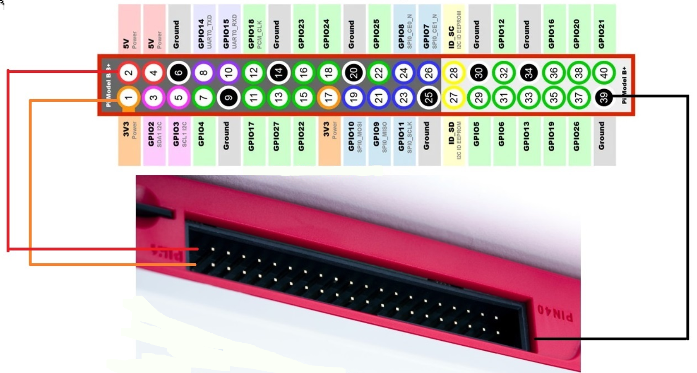

BytesOfProgress
Wiki
Raspberry Pi 400
The Raspberry Pi 400 is a product from the Raspberry Pi Foundation, essentially a personal computer built into a keyboard. Reminding of classic home computers like the Commodore 64 and others, it integrates all the components of a typical Raspberry Pi system into a compact keyboard form factor. Powered by the same Broadcom BCM2711 quad-core Cortex-A72 processor used in the Raspberry Pi 4 Model B, it offers ample performance for various computing tasks, from web browsing to programming.
General Information
Processor: Broadcom BCM2711 quad-core Cortex-A72 (ARM v8) 64-bit SoC @ 1.8GHz
Memory: 4GB LPDDR4-3200
Connectivity: Dual-band (2.4GHz and 5.0GHz) IEEE 802.11b/g/n/ac wireless LAN, Bluetooth 5.0, BLE Gigabit Ethernet 2x USB 3.0 and 1x USB 2.0 ports
GPIO: Horizontal 40-pin GPIO header
Video & sound: 2x Micro HDMI ports (supports up to 4Kp60) Multimedia: H.265 (4Kp60 decode); H.264 (1080p60 decode, 1080p30 encode); OpenGL ES 3.0 graphics
SD card support: MicroSD card slot for operating system and data storage
Keyboard: 78-, 79- or 83-key compact keyboard (depending on regional variant)
Power: 5V DC via USB connector
Operating temperature: 0°C to +50°C
Dimensions: 286 mm x 122 mm x 23 mm (maximum)
PinOut

back